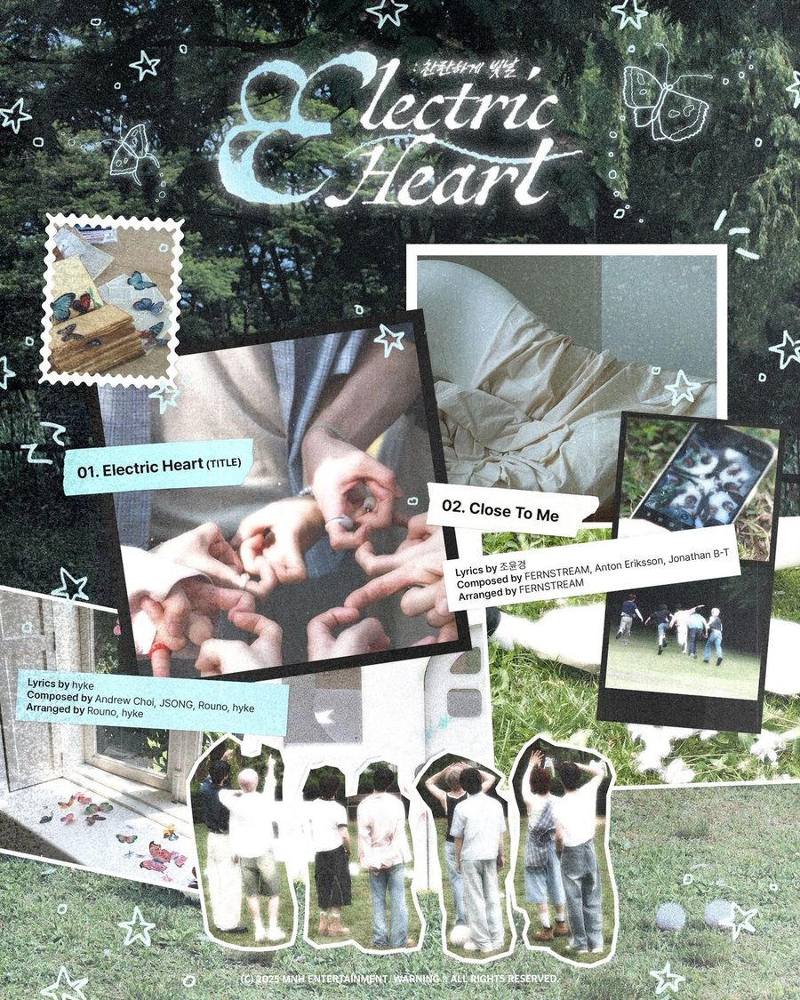
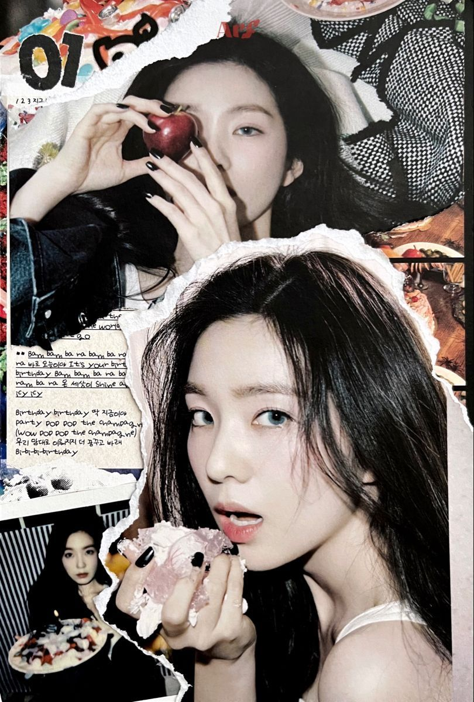
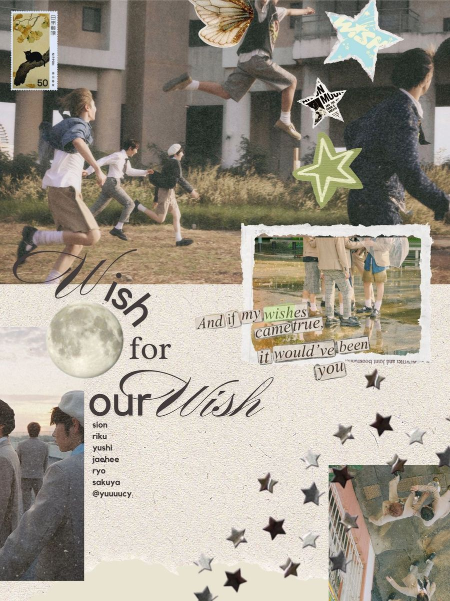
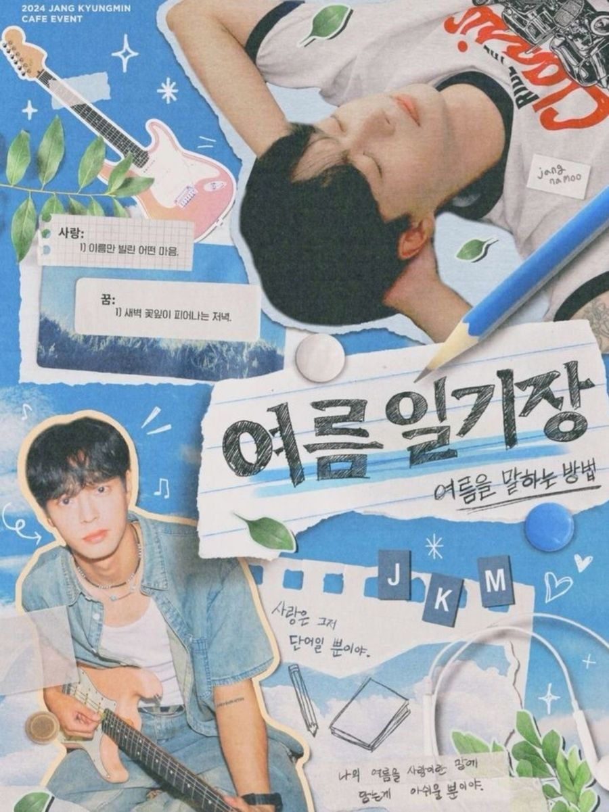
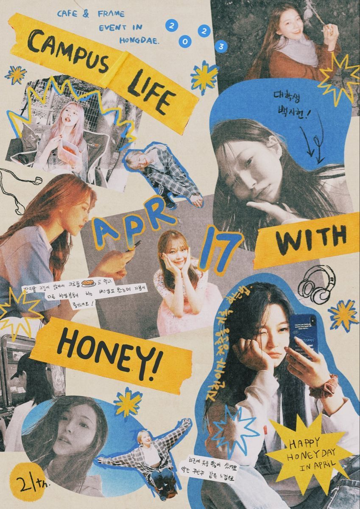
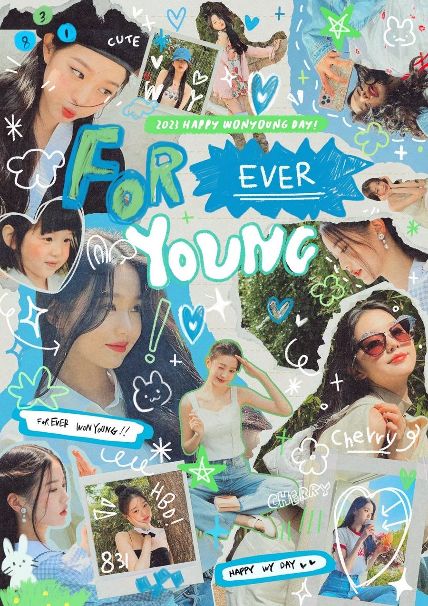
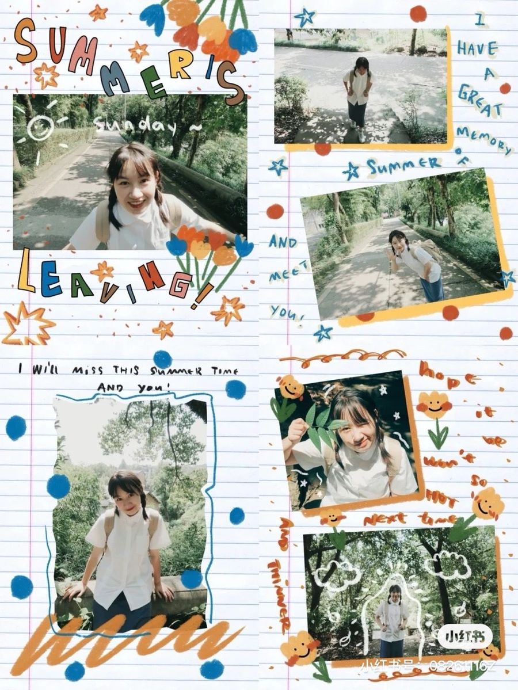
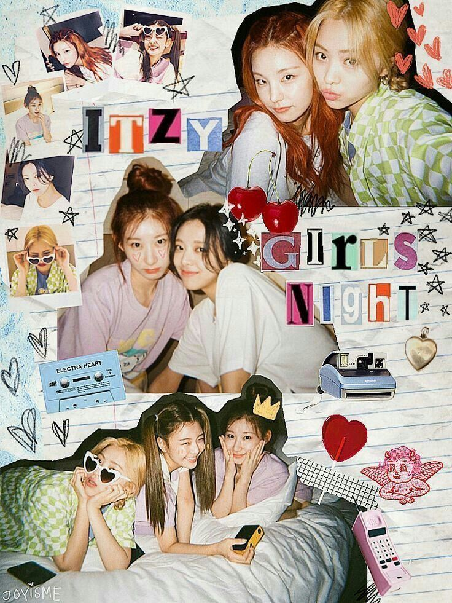

Design Study Guide · maydly
시각 구성부터 색채 이론, 타이포그래피, 질감, 도구 사용법, 그리고 감각을 언어로 만드는 방법까지

CHAPTER 01
콜라주처럼 보여도 안에는 설계된 질서가 있다. 구조를 먼저 이해해야 자유롭게 부술 수 있다.
무엇을 먼저 보게 할 것인지의 순서를 설계하는 것. 크기·명도·채도·위치로 1순위~3순위를 의도적으로 만들어야 한다. 아무것도 설계하지 않으면 눈이 어디를 봐야 할지 모른다.
VISUAL HIERARCHY — Electric Heart 포스터. 타이틀 → 사진 그룹 → 트랙 정보 순으로 위계가 설계되어 있다
관련 있는 요소끼리 묶어서 하나의 덩어리로 읽히게 하는 것. 트랙 정보가 하나의 박스 안에 처리되거나, 가사 텍스트가 노트지 위에 올라가 있는 방식이 이 원리다.
배경 → 중간 오브제 → 컷아웃 인물 → 텍스트 순으로 쌓아 깊이감을 만든다. 인물을 오려낸 것처럼 처리하는 것이 핵심.

아이즈원 콜라주 — 배경 사진 위에 인물 컷아웃, 텍스트가 층층이 쌓임

Wish for our Wish — 배경 사진, 찢긴 종이, 컷아웃 인물, 텍스트의 4중 레이어
콜라주처럼 보여도 실제론 보이지 않는 축이 있다. 완전 랜덤으로 놓으면 어지럽고 불안정해 보인다.
꽉 채우는 것과 숨통을 트는 것의 판단. 빽빽해 보이는 콜라주도 시선이 쉬는 지점이 반드시 설계되어 있다.
NEGATIVE SPACE — Wish for our Wish. 하단 베이지 공간이 텍스트와 오브제의 숨통을 만든다
인물의 눈 방향, 손 방향이 다음 요소를 가리키게 배치하는 것. 무의식적으로 읽히는 동선을 설계한다.
CHAPTER 02
색은 분위기를 결정한다. 규칙을 알아야 의도적으로 쓸 수 있고, 의도적으로 깰 수 있다.
보색을 그대로 쓰면 촌스러워진다. 보색에서 30도씩 벗어난 두 색을 쓰는 것이 근접보색. 대비는 유지하면서 충돌을 피할 수 있다.

여름일기장 — 파랑 배경 + 노랑 포인트의 근접보색 조합

Campus Life — 파랑+노랑 고채도 근접보색. 강한 에너지감
예시 색 조합
배경과 주조색을 같은 톤으로 깔고, 포인트 색 하나만 강하게 튀기는 구조. 포인트 색은 한 가지만 — 두 개 이상이면 위계가 사라진다.
베이지 톤온톤 — 크림+오프화이트 베이스에 블랙 포인트

블루 톤온톤 — 파랑+화이트 베이스에 그린 포인트
여러 사진을 섞을 때 색온도를 맞추는 것. 안 맞추면 콜라주가 아니라 그냥 사진 덩어리가 된다.
CHAPTER 03
폰트는 말투다. 무엇을 쓰느냐가 아니라 어떻게 배치하느냐가 더 중요하다.
손글씨체 + 세리프체 + 고딕체를 한 화면에 섞되, 2~3종 이하로 제한한다. 비슷한 성격의 폰트 두 개는 어울리는 것처럼 보이지만 오히려 어색하다.

FONT CONTRAST — Summer is Leaving. 손그림 대문자 + 필기체 + 프린트 서체 3종 조합
타이틀과 본문의 크기 차이를 크게 줄 것. 비슷한 크기로 여러 줄 쓰면 모두 같은 중요도로 읽혀 아무것도 강조되지 않는다.
여름일기장 — 타이틀이 본문 대비 4~5배 크게 점프
Forever Young — FOR EVER / YOUNG의 크기 위계 설계
텍스트를 오브제로 다루는 것. 똑같이 수평으로만 배치하면 재미가 없다.
TEXT AS OBJECT — Campus Life. 테이프 위 대문자 텍스트, 기울어진 날짜, 손글씨 메모가 각각 다른 방향으로 배치됨
CHAPTER 04
질감이 온도를 만든다. 같은 구도라도 질감이 다르면 전혀 다른 느낌이 된다.
종이 찢김, 마스킹 테이프, 스탬프, 필름 그레인 등이 콜라주의 온도감을 만든다.
TEXTURE LAYERS — 손글씨 텍스트, 찢긴 종이, 사진 경계가 겹치며 만드는 콜라주 질감
누끼 따는 방식에 따라 완성도가 달라진다. 가장자리 처리가 전체 느낌을 결정한다.
자동 선택
빠르지만 머리카락·복잡한 배경에서 품질 저하. 빠른 작업용.
Select Subject + Refine Edge
중간 품질, 적당한 속도. 실용적인 선택.
채널 마스크
머리카락 한 올까지 살릴 수 있음. 퀄리티 최상.
스탬프, 별, 테이프, 체리, 카세트 등은 단순한 장식이 아니라 콘셉트를 설명하는 기호다. 오브제 하나가 시대감·무드·취향을 한번에 전달한다.

ITZY — 체리, 카세트, 폴라로이드, 핑크 전화기. 90s 슬럼버파티 세계관을 오브제로 설명
Electric Heart — 우표, 나비, 폴라로이드. 편지+자연 세계관을 오브제로 설명
CHAPTER 05
도구를 모르면 머릿속 이미지를 꺼낼 수 없다. 핵심 기능만 알아도 80%는 된다.
낙서, 화살표, 밑줄, 별 등을 직접 그려 넣는 능력. 콜라주 포스터의 온도감 상당 부분이 여기서 만들어진다.
HAND-DRAWN ELEMENTS — Forever Young. 흰색 낙서, 하트, 별, 밑줄이 디지털 위에 손온도를 더함
Adobe Color
color.adobe.com
색 조합 분석, 근접보색 자동 생성
눈누
noonnu.cc
한글 폰트 무료 다운로드 및 페어링 탐색
레퍼런스 보드 구축. 색계열·스타일별로 분류해서 모을 것
Freepik
텍스처, 오브제 PNG 리소스 수집. 무료 티어도 충분
WhatTheFont
이미지에서 폰트 이름 자동 인식. 레퍼런스 폰트 찾을 때
Google Fonts
영문 폰트 무료 다운로드. 눈누와 조합해서 사용
CHAPTER 06
감각은 타고나는 것이 아니라 쌓이는 것이다. 언어화할 수 있어야 재현할 수 있다.
왜 좋은지 말로 설명할 수 있어야 재현 가능해진다. '감각적이다'로 끝나면 발전이 없다.
요소 하나하나가 달라도 전체가 하나의 세계관으로 읽혀야 한다. 색·질감·폰트·오브제가 같은 언어를 쓰고 있는지 항상 확인.
여름일기장 — 블루 배경, 나뭇잎, 연필, 노트지. 모든 오브제가 '여름방학 일기' 언어로 통일
ITZY — 체크무늬, 카세트, 체리, 폴라로이드. 모든 요소가 Y2K 슬럼버파티 세계관